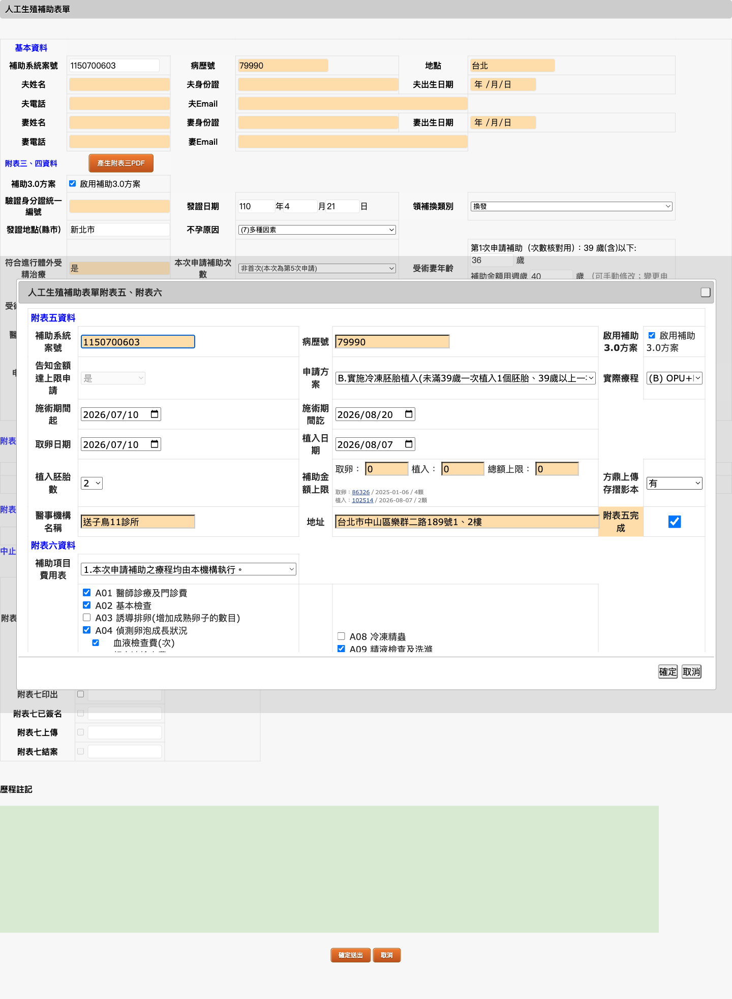
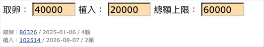
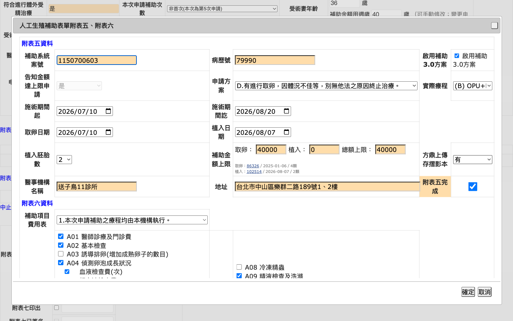

dev-flow · 7-review · 審查介面
subsidy-3-0-plus
正本是 md。截圖槽分組 + 定名檔 + lightbox + e2e 掛點。
verdictPASS
分組5
槽7
PLUS／3.0 兩格

佔位
佔位
進場:附表六 → 已生成附表五。不准新增。不准發明編輯 URL。
e2e: e2e/plus-two-cells.spec.ts
手改不蓋
佔位
進場:附表六 → 已生成附表五。不准新增。不准發明編輯 URL。
e2e: e2e/manual-keep.spec.ts
年齡鎖
佔位
進場:附表六 → 已生成附表五。不准新增。不准發明編輯 URL。
e2e: e2e/age-lock.spec.ts
OPU 小字

佔位
進場:附表六 → 已生成附表五。不准新增。不准發明編輯 URL。
e2e: e2e/opu-note.spec.ts
方案拆
佔位

佔位
進場:附表六 → 已生成附表五。不准新增。不准發明編輯 URL。
e2e: e2e/plan-split-c.spec.ts
由 scripts/build-stage7-html.py 從 md ## 截圖槽解析產生,不包 html-shell。